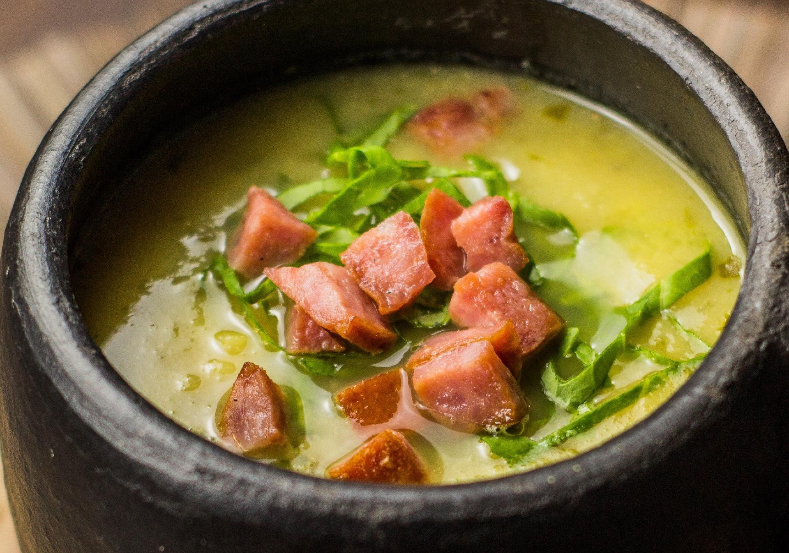
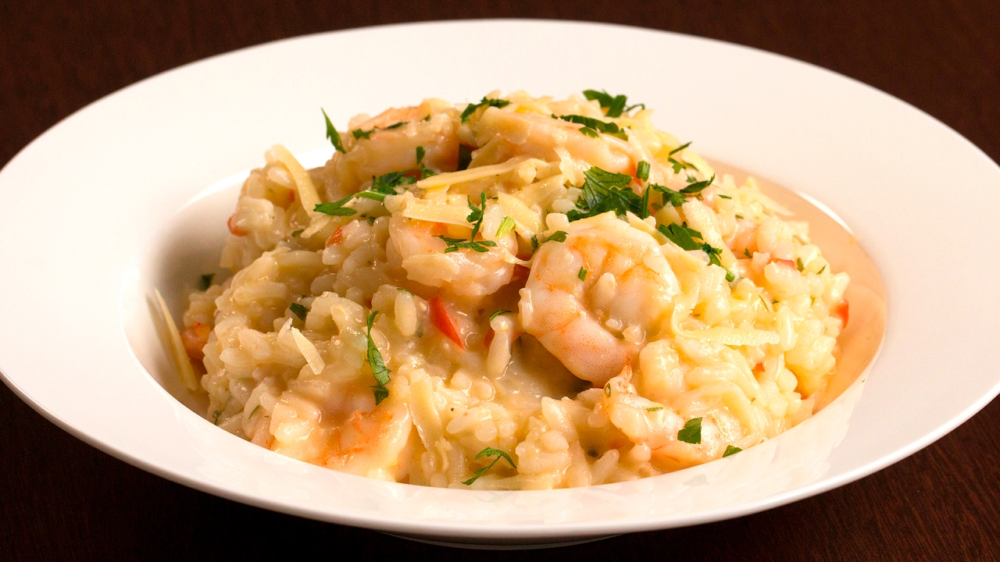
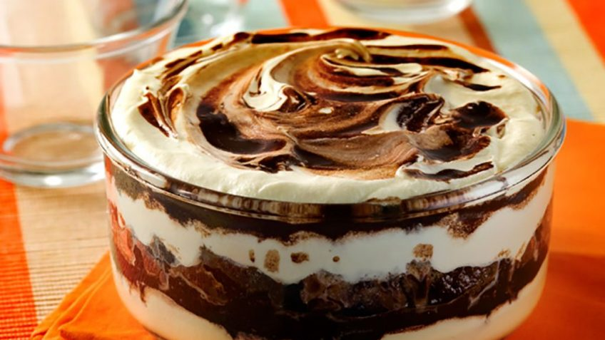

Essas três receitas serão ensinadas ao longo da semana aos alunos da turma Nível 2 que participando do curso de Culinária Básica com o Professor Thiago Freitas.
Professor Thiago Freitas é formado pela escola francesa R&C e tem experiência em grandes restaurantes europeus como o TIE e o PEC.
Acompanhe algumas críticas:
Es el mejor plato que he comido en mi vida!
, um cliente espanhol.
Het is het beste gerecht dat ik ooit in mijn leven heb gegete
, um cliente holandês.
È il miglior piatto che abbia mai mangiato in vita mia
, um cliente italiano.
| CALDO VERDE (entrada) | Tempo de Preparo: 30 min. | Rendimento: 5 porções |
|  |
INGREDIENTES
|
MODO DE PREPARO
|
|
| Tempo de Preparo: 50 min. | Rendimento: 4 porções | RISOTO DE CAMARÃO (principal) |
INGREDIENTES
|
 |
MODO DE PREPARO
|
|
| PAVÊ DE BAUNILHA E CHOCOLATE (sobremesa) | Tempo de Preparo: 60 min. | Rendimento: 16 porções |
|  |
INGREDIENTESCREME DE BAUNILHA
GANACHE
PAVÊ
|
MODO DE PREPAROCREME DE BAUNILHA
GANACHE
MONTAGEM DO PAVÊ
|
|
Fonte: http://www.tudogostoso.com.br